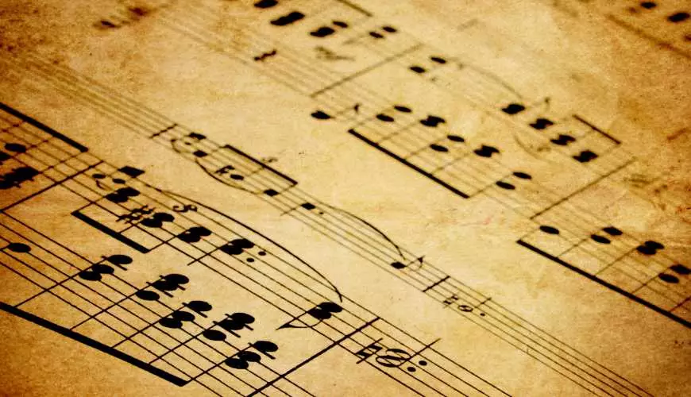
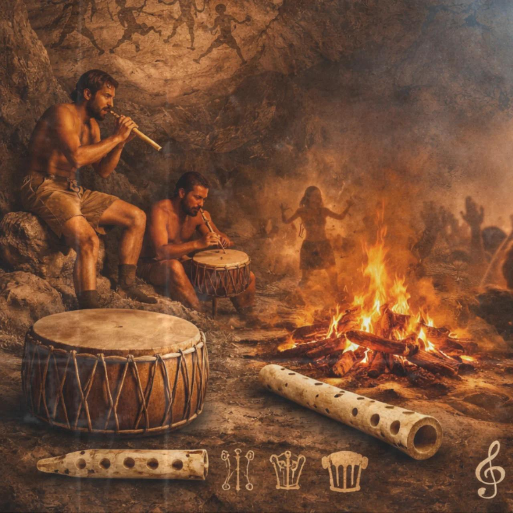
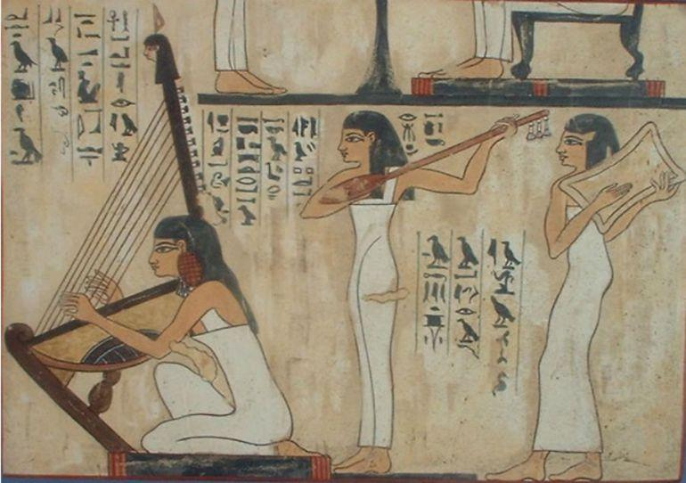
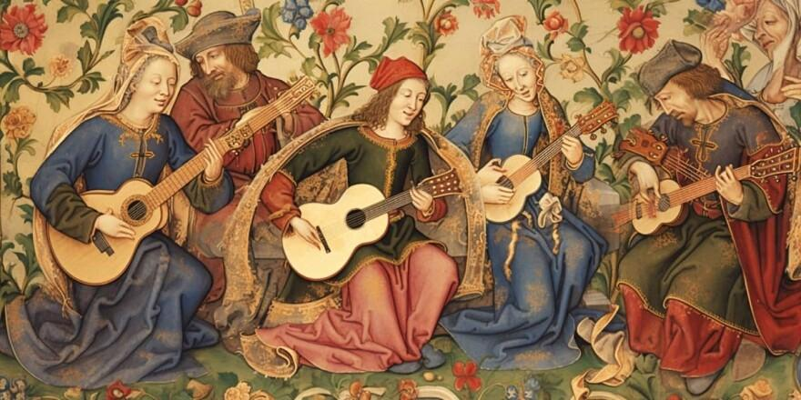
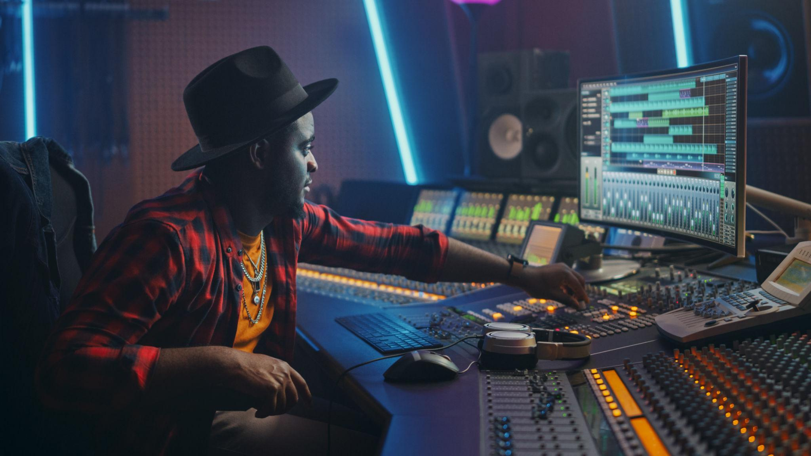

A história da música
A música faz parte da humanidade há milhares de anos. Desde os primeiros sons produzidos pelos seres humanos até as músicas digitais que ouvimos atualmente, ela passou por diversas transformações, acompanhando a evolução das sociedades e culturas.

A música na Pré-História
Antes mesmo da criação dos instrumentos, os seres humanos já produziam sons utilizando a voz, palmas e objetos da natureza.
A música estava presente em rituais, celebrações e atividades coletivas, funcionando como uma forma de expressão e comunicação.

A música na Antiguidade
No Egito, na Grécia e na Mesopotâmia, a música ganhou importância nas cerimônias religiosas, festas e acontecimentos sociais.
Instrumentos como harpas, flautas e liras eram utilizados. Os gregos também estudavam a relação entre música, matemática e educação.

A música na Idade Média
Durante a Idade Média, a música religiosa teve grande destaque, principalmente dentro das igrejas.
Também surgiram os trovadores, que percorriam diferentes regiões apresentando canções sobre amor, histórias e acontecimentos da época.

O nascimento da música clássica
Com o passar dos séculos, a música ganhou novas formas de composição e maior complexidade.
Compositores como Bach, Mozart e Beethoven marcaram a história com obras que influenciam músicos até hoje. Orquestras e instrumentos também ganharam destaque.

A revolução da música moderna
O século XX trouxe grandes mudanças. O rádio, os discos e os equipamentos de gravação permitiram que a música chegasse a cada vez mais pessoas.
Rock, jazz, pop, samba e diversos outros estilos conquistaram o mundo, criando novas culturas e movimentos musicais.

A música na era digital
Atualmente, a tecnologia transformou completamente a maneira como produzimos, compartilhamos e consumimos música.
Plataformas de streaming, redes sociais e ferramentas digitais permitem que artistas alcancem públicos do mundo inteiro com apenas alguns cliques.

Uma história que continua sendo escrita
A música nunca deixou de evoluir. Cada geração cria novos sons, estilos e formas de expressão, mostrando que ela continua sendo uma parte essencial da cultura humana. E o futuro ainda reserva muitas descobertas.
Conheça os diferentes gêneros musicais →